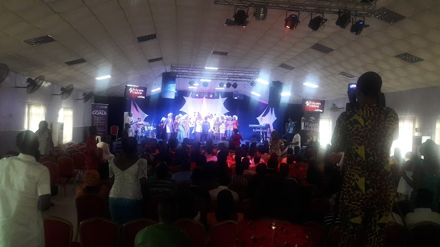
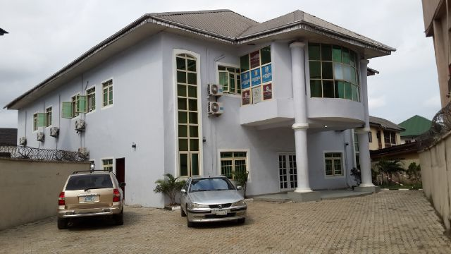

Youth & Teens
Youth Ministry
The heartbeat of The Rest Place — a vibrant generation raised in worship, purpose and genuine friendship. "Perfect for the young and young at heart."
From the dance floor to the prayer room, from the classroom to the street — discover where you can serve, belong and grow.
The heartbeat of The Rest Place — a vibrant generation raised in worship, purpose and genuine friendship. "Perfect for the young and young at heart."

Musicians, singers and dancers who create an atmosphere where the presence of God is experienced every single service.
Intercessors who stand in the gap for families, the church, the city and the nations through committed prayer and fasting.

A brotherhood building godly men — husbands, fathers and leaders — through discipleship, fellowship and accountability.

A sisterhood of grace — supporting women in every season through the Word, mentorship and loving fellowship.

Where the next generation meets Jesus — fun, safe and Bible-rich programs that help children love God for themselves.

Bringing the love of Christ to Port Harcourt — from empowerment programs to evangelism and compassion projects.

From African Praise Sundays to family feasts — celebrating God in the beauty of our rich Nigerian culture.
"Every one of you should use whatever gift you have received to serve others." — 1 Peter 4:10
God has placed something in your hands. Whether you sing, teach, welcome, pray, organise or give — there is a place for your gift at The Rest Place.
As every man hath received the gift, even so minister the same one to another, as good stewards of the manifold grace of God.1 Peter 4:10
Talk to a pastor or ministry leader after any service — or reach out to us and we will connect you with the right team.